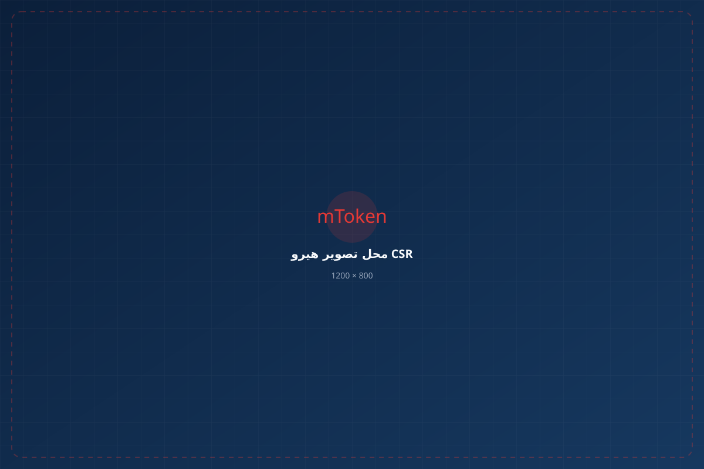
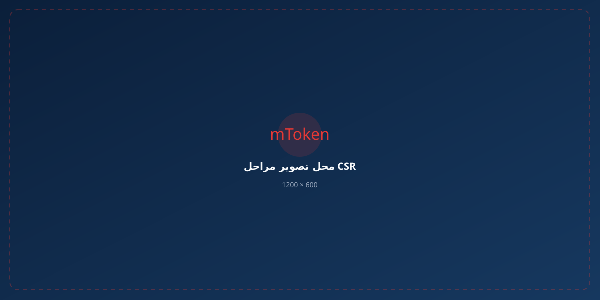

برای فرآیندهای مرتبط با سامانه مودیان و شناسه یکتای مالیاتی، یا برای گواهی SSL و استفاده روی سرور، بخش فنی کار را بدون درگیری با تنظیمات پیچیده انجام دهید.

دو مسیر اصلی خدمات ما؛ ابتدا فرآیندهای مرتبط با سامانه مودیان و سپس گواهی SSL و آمادهسازی برای سرور.
اگر برای ارسال صورتحسابهای الکترونیکی و دریافت شناسه یکتای مالیاتی با کلید عمومی، کلید خصوصی، CSR و گواهی دیجیتال درگیر شدهاید، بخش فنی فرآیند را به ما بسپارید.
برای وبسایتها، سامانههای سازمانی، سرویسهای داخلی و سرورهایی که به گواهی SSL نیاز دارند، تولید صحیح CSR و آمادهسازی فایلهای گواهی میتواند بخش مهمی از فرآیند راهاندازی باشد.
در فرآیندهای مرتبط با ارسال صورتحساب الکترونیکی و دریافت شناسه یکتای مالیاتی، متقاضی ممکن است با مراحل تولید کلید، CSR و دریافت گواهی دیجیتال مواجه شود. ما بخش فنی این مسیر را برای شما آماده میکنیم.
نوع گواهی و کاربرد آن توسط کارشناس بررسی میشود.
کلید و CSR مطابق اطلاعات موردنیاز آماده میشود.
اطلاعات لازم برای ثبت درخواست و ادامه فرآیند ارائه میشود.
متقاضی پس از احراز هویت، گواهی خود را دریافت میکند.

CSR یا Certificate Signing Request، درخواست صدور گواهی دیجیتال است که اطلاعات لازم برای صدور گواهی و کلید عمومی را در خود دارد.
تولید CSR صرفاً ساختن یک فایل نیست. نوع الگوریتم، ساختار کلید، مشخصات درخواست و نحوه نگهداری کلید خصوصی میتواند روی ادامه فرآیند و استفاده از گواهی تأثیر داشته باشد.
برای وبسایتها، سامانههای سازمانی، سرویسهای داخلی، مجموعههای بانکی و سایر سرویسهایی که برای ثبت درخواست یا استفاده از گواهی SSL به آمادهسازی فنی نیاز دارند.
بسیاری از وبسایتها و سرویسهای داخلی، بهخصوص در شرایطی که استفاده از برخی گواهیهای خارجی با محدودیتها و مسائل مربوط به تحریم مواجه است، از گواهیهای صادرشده توسط مراجع داخلی استفاده میکنند.
در این فرآیند، تولید صحیح CSR برای ثبت درخواست گواهی اهمیت زیادی دارد. پس از دریافت گواهی نیز ممکن است آمادهسازی فایل Certificate و زنجیره گواهی برای استفاده روی سرور موردنیاز باشد.
اگر برای وبسایت یا سرویس سازمانی خود به گواهی SSL نیاز دارید و تولید CSR یا آمادهسازی فایلهای گواهی برای سرور برایتان پیچیده است، میتوانید این بخش را برونسپاری کنید.
اگر Certificate را دریافت کردهاید اما برای تبدیل، ترکیب، آمادهسازی Chain یا تنظیم فایلها برای استفاده در سرور نیاز به کمک دارید، با کارشناسان ما تماس بگیرید.
کافی است نیازتان را مطرح کنید؛ کارشناسان مسیر فنی مناسب را بررسی و راهنمایی میکنند.
تولید CSR و آمادهسازی فایلهای گواهی با توجه به کاربرد موردنظر انجام میشود.
لازم نیست برای پیدا کردن دستورهای OpenSSL یا تنظیمات پیچیده سرور وقت زیادی صرف کنید.
از بررسی نیاز تا تولید CSR، دریافت گواهی و آمادهسازی برای استفاده، مسیر کار برای شما مشخص میشود.
کلید خصوصی بخش حساس فرآیند است و نباید در اختیار افراد غیرمجاز قرار بگیرد. فرآیند تولید و استفاده از کلید باید بهگونهای انجام شود که کنترل و نگهداری امن کلید خصوصی نزد مالک گواهی حفظ شود.
کافی است با کارشناسان تماس بگیرید و کاربرد گواهی خود را اعلام کنید؛ برای مثال سامانه مودیان، دریافت شناسه یکتای مالیاتی، SSL وبسایت یا استفاده روی سرور. سپس نوع گواهی و مراحل موردنیاز بررسی میشود.
بسته به فرآیند موردنیاز، خدمات میتواند شامل تولید کلید و CSR، آمادهسازی اطلاعات درخواست، دریافت کد رهگیری، راهنمایی مراحل احراز هویت و دریافت گواهی و راهنمایی برای استفاده از اطلاعات و فایلهای مربوطه باشد.
صدور نهایی گواهی توسط مرجع صادرکننده و پس از طی فرآیند مربوط به احراز هویت انجام میشود. خدمات ما بر تولید کلید و CSR، آمادهسازی درخواست، دریافت کد رهگیری و راهنمایی مراحل دریافت گواهی متمرکز است.
تولید CSR، آمادهسازی درخواست، بررسی گواهی دریافتشده، آمادهسازی Certificate Chain و فایلهای موردنیاز برای استفاده روی سرور و راهنمایی نصب از جمله خدمات قابل ارائه است.
در این حالت نیز میتوانید با کارشناسان تماس بگیرید. در صورت نیاز، Certificate، Chain و فایلهای مربوطه بررسی و برای محیط سرور آماده میشوند.
کلید خصوصی اطلاعات بسیار حساسی است و اصل بر این است که نزد مالک گواهی بهصورت امن نگهداری شود. قبل از هرگونه انتقال یا استفاده از کلید خصوصی، نحوه انجام کار باید با توجه به شرایط فنی و امنیتی بررسی شود.
لازم نیست از ابتدا با اصطلاحات فنی درگیر شوید. کاربرد خود را برای ما توضیح دهید؛ کارشناسان بررسی میکنند چه مراحلی برای شما لازم است و از کجا باید شروع کنید.